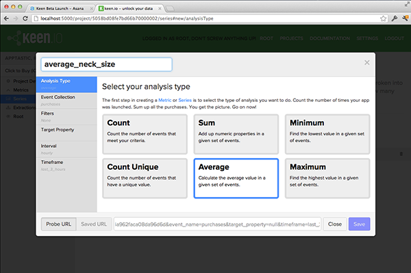

This we believe: Getting started with Keen APIs should be easy. For the technical wizards among you, this guide will take you 8 minutes and you can dig into the advanced documentation. For the sorcerer’s apprentices, this shouldn’t take much more than 20 minutes. If it does, we’ve failed. Let us know via email or come chat with us at users.keen.io.
Once you’re through this guide, we hope you’ll be square on the following:
This guide assumes that you’ve been granted developer preview access. Keen is still in private beta, so access is limited to the choicest of rockstars. If you don’t have a Keen login yet, you can request access here.
If you haven’t done so already, login to Keen.io and create a new project. Since we’re just practicing, you might want to give it a sufficiently silly name like “Getting Keeny” or “Windows ME”. Make note of the Project ID and the API Key. You’ll need those soon.
What is a project? - A project amounts to a data silo. The information in one project isn’t available to other projects. Practically speaking, in the mobile world, a project is an app.
Let’s get to the heart of it - sending events. Events are the actions that are happening in your app that you want to track. Events are stored in Event Collections. We’ll call our new Event Collection “purchases”, but you can pick any name that doesn’t have spaces or weird characters.
Let’s insert a new “purchase” event into the purchases event collection. The event should be in JSON format and look like this example.
STEP 1: Copy this example, paste it into a text editor, and save it as a “purchase1.json”.
{
"category": "magical animals",
"animal_type": "pegasus",
"username": "perseus",
"payment_type": "head of medusa",
"price": 4.50
}
Next you’ll send this event to Keen using a command line interface like Mac’s Terminal. cURL is a simple data transfer program built into most operating systems. We’ll use cURL to do an HTTP POST to the Keen API.
STEP 2: Copy, modify, then paste the following cURL command into your terminal. Replace <PROJECT_ID> (e.g. 50610255555a2c4f36000000), <EVENT_COLLECTION> (e.g. purchases) and <API_KEY> (e.g. e648cf32a1fb401194444444c4e7c2b1) with your specific values.
curl https://api.keen.io/3.0/projects/<PROJECT_ID>/events/<EVENT_COLLECTION>\
-H "Authorization: <API_KEY>"\
-H "Content-Type: application/json"\
-d @purchase1.json
Note: Make sure to navigate your Terminal prompt to the place where you saved your event, or add a file path to your file name.
There are a couple things going on here.
The response should look like:
{
"created": true
}
Winning!
Through our data analysis API, you’ll have access to a number of different tools. But, for the moment, let’s just worry about one - counts. It does exactly what it sounds like it does - counts the number of times an event has occurred.
We’ll try a very simple version of a count here. The first query string parameter is the “api_key”. You know where to find this from earlier. The second parameter is the “event_collection” (e.g. purchases) where we want to do analysis.
Replace the <PROJECT_ID>, <API_KEY>, and <EVENT_COLLECTON_NAME> with your own, then enter this request in your browser bar.
https://api.keen.io/3.0/projects/<PROJECT_ID>/queries/count?api_key=<API_KEY>&event_collection=<EVENT_COLLECTION>
{
"result": 1
}
Yup. 1. We only inserted one event, so that’s all we can count. This is just a getting started guide. Here a couple more simple examples just to show off:
Now change Count to Average and add a target_property query string parameter to let the API know which numeric property you want average. Here’s how you can run an average on the “price” property.
https://api.keen.io/3.0/projects/<PROJECT_ID>/queries/average?api_key=<API_KEY>&event_collection=<EVENT_COLLECTION>&target_property=price
{
"result": 4.5
}
Add a Timeframe parameter to any request to limit the results to events that happened in a particular timeframe. For example, we can set timeframe=today to count the events created today.
https://api.keen.io/3.0/projects/<PROJECT_ID>/queries/count?api_key=<API_KEY>&event_collection=<EVENT_COLLECTION>&timeframe=today
{
"result": 1
}
You can also add an Interval parameter in order to break the results into buckets. Here’s an example with a Timeframe of the last_3_hours and an hourly Interval.
https://api.keen.io/3.0/projects/<PROJECT_ID>/queries/count?api_key=<API_KEY>&event_collection=<EVENT_COLLECTION>&timeframe=last_3_hours&interval=hourly
{
"result": [
{
"timeframe": {
"end": "2012-09-26T15:00:00+00:00",
"start": "2012-09-26T14:00:00+00:00"
},
"value": 0
},
{
"timeframe": {
"end": "2012-09-26T16:00:00+00:00",
"start": "2012-09-26T15:00:00+00:00"
},
"value": 0
},
{
"timeframe": {
"end": "2012-09-26T17:00:00+00:00",
"start": "2012-09-26T16:00:00+00:00"
},
"value": 0
}
]
}
Note: last_N_hours breaks up results for the last N completed hours. If it’s 2:15pm now, last_hour will calculate from 1pm to 2pm. It won’t include events from 2pm to 2:15pm.
That’s just the beginning. You’ll find a lot more analysis tools on our website and our API docs.
Congratulations! You’ve graduated from the Keen Getting Started guide. Admittedly, we’ve just scratched the surface, but hopefully you’ve got some context on which you can build.
Now, go do something useful.
Actually, before you do that, could you please let us know what you thought of this guide? What would make it better or less confusing? Drop a note to team@keen.io.
On to the good stuff...
We built a massively scalable event data warehouse so that you can send us whatever data you want without having to worry about storage or performance. Dive into our data collection API docs.
Or, jump straight to our currently available client usage guides.
More are on the way!
We are passionate about building a powerful analysis API so you can get the most out of your data. Our services could be the building blocks for your new custom dashboard or a real-time workflow. I’m sure you’ll think of even more uses we haven’t considered yet :)
Now that you’ve sent at least one sample event, you can login to Keen.io and check out our query builders. You’ll notice that all of the custom properties you send are immediately available for analysis. If you’re more interested in the API itself, check out our documentation on our suite of analysis API offerings.